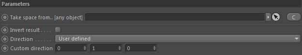
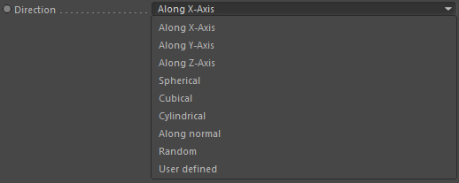

Parameters
Parameters

Take space from.. [any object]
If you link an object here, the space the resulting direction is defined in will be the space of the linked object and not of the alignment node itself.
You can drop any type of object here (not just Effex ones).
Except in the Direction modes 'Motion' and 'Along Normal' where you need an Effex volume linked.
Except in the Direction modes 'Motion' and 'Along Normal' where you need an Effex volume linked.
Direction

Selects the direction. The space of the direction is either from the alingment node or any linked object in the Take space from.. setting.
Along X-, Y-, Z-Axis
Along X, Y or the Z axis
Spherical
Direction points away from the according node's center point
Cubical
Direction points along the nearest face of a virtual cube around the according node's center point
Cylindrical
Direction points away from the according node's center point. But only along the X-Z plane (to the sides of a virtual cylinder).
Along normal
Direction points along the normal of the linked volume in Take space from.. (required)
Random
Random directions are generated
User defined
The setting 'Custom Direction' is used.
Motion (Volumen)
Direction is taken from the motion vectors of the linked volume in Take space from.. (required). The vector contains rotational and translational forces
and the direction is NOT normalised. So it contains the full motion length.
Invert result
Inverts the resulting direction.
Custom direction
Only used if 'Direction' is set to 'User-Defined'. Defines a custom direction.